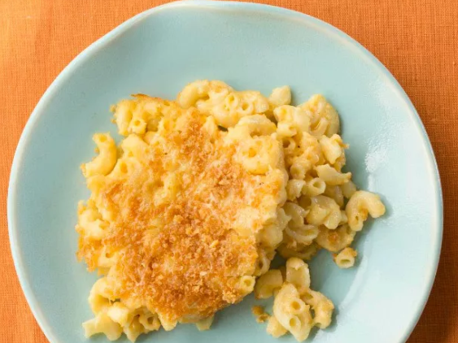

Mac and Cheese

This homemade mac and cheese is topped with buttered bread crumbs for pure comfort food.
Ingredient
- Macaroni
- Butter and flour
- Milk
- Cheese
- Seasonings
- Bread crumbs
Directions
-
Boil the noodles, drain, and transfer to a prepared baking dish.
-
Make the cheese sauce, pour the sauce over the noodles, and stir.
-
Make the topping, spread it over macaroni and cheese, and sprinkle with paprika.
-
Bake the mac and cheese until the topping is golden brown.